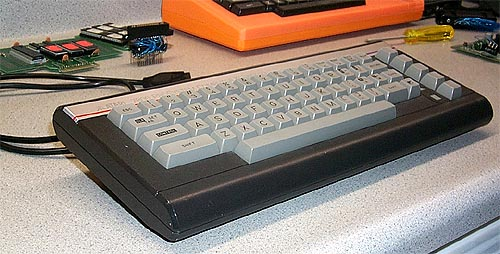
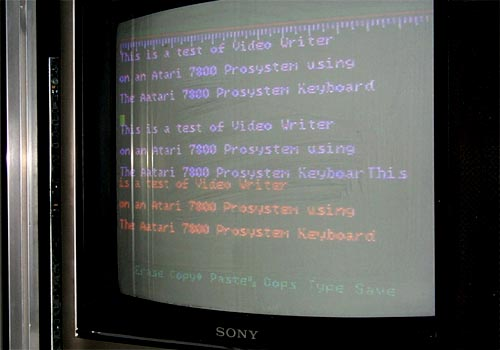

Computer Keyboard

The
Atari 7800 PRO System keyboard would be Atari's second attempt at adding
computer functionality to one of its gaming consoles. The first
attempt was the Atari Graduate keyboard for the Atari 2600 designed by
Peripheral Visions, Inc. The Atari 7800 keyboard
plugs into joystick port #2 and using an accompanying cartridge would turn
the Atari 7800 PRO System into a full blown computer system capable of
using the current line of Atari 400/800 and XL computer peripherals.
(It should be noted, since the hardware of the 7800 was quite different
compared to the hardware of the Atari computer line, the existing software
would not be compatible). The keyboard is a remarkably
elegant piece of hardware in both its design and function.

Several
software packages were being prepared for the Atari 7800 keyboard for its
release. The 7800 keyboard package would also include two software
titles. Most likely those two titles would have been
Atari 7800 PRO System BASIC and Atari 7800 PRO System VideoWriter.
The above screen shows VideoWriter being used. An interesting
note about the software which was a great feature: while using
the keyboard to write words, you could also use a joystick or trakball
to move the cursor around the screen for selecting text, or even cut &
paste as shown above. All this in 1984, long before such novelties
were available on the IBM PC with EDLIN or EDIT (Bill Gates, eat your heart
out!!!) So not only were the software titles not some
watered down versions of such titles as AtariWriter, the ever popular word
processor, but in fact they were a great improvement.
Since Atari Corp canceled development on all peripherals for the Atari
7800 PRO System, its unknown why GCC didn't market the keyboard themselves.
The unit is finished, the software is ready as well.
GCC was called in several years later to finish many of the software titles
that Atari had in the works back in 1984. Atari Corp.
contacted GCC and arranged to have them complete quite a few titles so
that new software was made available for the Atari 7800 when it was finally
released in 1986.